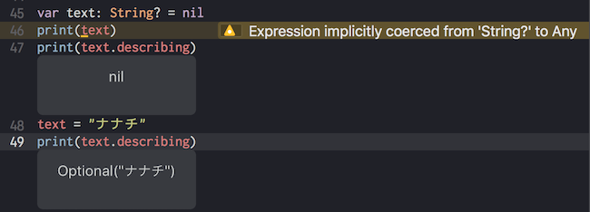

- Fri 20 October 2017
- development
- mani3
- #swift
Optional extension
こんな感じにかけます。
extension Optional {
var describing: String {
return String(describing: self)
}
}
いつも print や NSLog で Optional型を入れると Expression implicitly coerced from 'String?' to Any とか default value 入れろとか言われるのでその辺りが簡単になるかなと思います。
使い方

👋